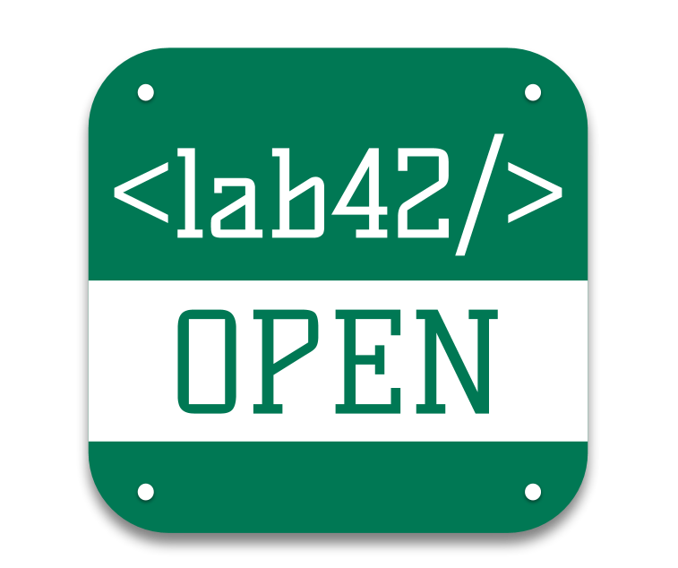

Gathering and mining public knowledge to open novel doors in molecular ecology, microbiology and biodiversity
This site uses Google Analytics cookies for overall usage statistics collection - for academic reporting purposes.
By using this site, you agree to its use of cookies.